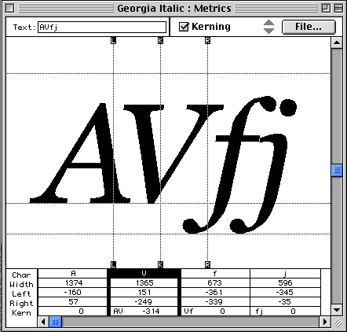

Apéndice C: Implementación y notas de desempeño de las fuentes
Este apéndice es informativo, no normativo.
- Caché de fuentes
- La caché de fuente permite una copia temporal de las fuentes en el sistema cliente. A menudo se guardan en el disco con otros elementos como los gráficos especificados por la AU.
- DocLock™
- La tecnología DocLock™ de Bitstream garantiza que los PFR de TrueDoc sólo puedan utilizarse con el sitio para el que fueron publicadas. Un PFR de TrueDoc trasladado a un sitio diferente o referenciado desde otro sitio no funcionará.
- Equivalencia de fuentes
- La equivalencia de fuentes es un proceso de selección de fuentes similares en base a la utilización de uno o más atributos de la fuente primaria. Los atributos comunes incluyen serif, sans-serif, peso, altura de las mayúsculas, altura de la x, espaciado, lenguaje y variantes. La equivalencia de fuentes depende del algoritmo y de la variedad de las fuentes candidatas.
- Firma digital
- Parte de una tecnología de administración empresarial, utilizada para proporcionar contratos seguros.
- Fuente
- Un "manejador" que se refiere a una fuente específica, excluyendo el tamaño de la fuente.
- Fuente de servidor
- Una fuente de servidor es un recurso de fuente localizado en un servidor web que es referenciado por la definición de la Fuente Web. La aplicación del usuario puede usar este recurso para procesar la página.
- Fuentes TrueType GX
- Las Fuentes TrueType GX contienen extensiones al estándar del formato TrueType que permiten fuentes variables, similares a las fuentes Multiple Master. Pueden haber varios ejes de variación tales como peso, altura o inclinación. Los ejes puede definirse para obtener casi cualquier efecto. TrueType GX también puede soportar la sustitución en la representación de los signos para las ligaduras, formas contextuales, fracciones, etc. A la fecha, TrueType GX está disponible sólo en la Mac (ver [TRUETYPEGX]).
- Fuente Type 1
- La fuente Type 1, desarrollada por Adobe Systems, fue uno de los primeros formatos escalables disponibles. Las fuentes Type 1 generalmente contienen 228 caracteres con las representaciones de los signos descriptas usando curvas bezier de tercer grado. Mac, Windows y X tiene formatos similares pero separados; Abobe proporciona el Adobe Type Manager para las tres plataformas. Type1c es una más reciente forma de almacenamiento comprimido sin pérdida para las representaciones de los signos de Type 1.
- Infinifont
- Una técnica de sintetizado de fuentes que, dado un número Panose-1 (y, opcionalmente, datos adicionales de descripción de la fuente) puede generar una fuente sin extrapolación de un único contorno maestro o interpolación entre dos o más contornos (ver [INFINIFONT]).
- Intellifont
- La tecnología Intellifont fue desarrollada por Agfa y es el formato nativo para Hewlett-Packard y otras impresoras que usan el lenguaje PCL5. También es el formato de fuente nativo de las computadoras Amiga.
- Itálica
- Un tipo de letra en las escrituras latinas que es más cursivo que las letras romanas pero menos que las letras manuscritas. A menudo, un par de fuentes son diseñadas para utilizarse en conjunto; una es una romana con serif y una es itálica. Otros términos para describir esta clase de letra incluye cursiva y, en la escritura cirílica, kursiv. Para los tipos sans-serif, el tipo acompañante es a menudo una variante inclinada u oblicua antes que un tipo diferente.
[D]
- Kerning
- Alteración del espacio entre las representaciones de signos seleccionados, que de otro modo podrían parecer demasiado juntos o demasiado separados, para obtener un color tipográfico más uniforme.
 [D]
- Limitación de un URI
- Un proceso de bloqueo de un recurso de fuente particular en un sitio Web determinado por la incrustación de un URI encriptado o el uso de firma digital en un recurso de fuente.
- Multiple Master Font
- Una Fuente Multiple Master contiene dos fuentes primarias que son usadas con un programa especial de procesamiento que proporciona un resultado interpolado. Adobe Systems provee un mecanismo que proporciona los parámetros a ser utilizados para controlar la salida o la fuente de salida interpolada. Estos parámetros describen generalmente las características de una fuente original y la múltiples variantes resultantes son referenciadas como una "fuentes sintetizadas".
- Open Type
- OpenType es una extensión del formato de fuentes TrueType que contiene información adicional que extiende las capacidades de las fuentes para soportar tipografía internacional de alta calidad. Open Type puede asociar un simple carácter con múltiples representaciones del signo, y combinaciones de caracteres en una única representación del signo (formación de ligaduras). Open Type incluye información en dos dimensiones para soportar características de posicionamiento complejo y vinculación de signos. TrueType Open y OpenType contienen información explícita acerca de la escritura y el lenguaje, de modo que una aplicación de procesamiento de texto puede ajustar su comportamiento adecuadamente (ver [OPENTYPE]).
- Reducción en la representación de signos
- La reducción en la representación de signos es el proceso por el cual las representaciones de signos no deseados (junto con su información sobre espaciado lateral y kerning) son eliminadas de una fuente primaria para producir una subconjunto más reducido de fuentes que cubre un documento particular o un juego de documentos. Esto es particularmente conveniente para documentos con escrituras ideográficas, donde la cantidad de signos complementarios a la fuente de base puede ser muy grande. La reducción en la representación de signos para documentos que usan escrituras que requieren ligaduras, como el Arabe, es difícil si no se conocen las reglas de formación de las ligaduras del sistema de visualización final.
- Speedo
- La tecnología de fuente Speedo fue desarrollada por Bitstream y es el formato de fuente nativo de las computadoras Atari ST y Falcon. Es también usada por las computadoras corriendo el sistema X window.
- TrueDoc
- La tecnología TrueDoc fue desarrollada por Bitstream para la creación, transporte y representación de objetos de fuente escalable, independientes de la plataforma, en la web. La creación de objetos de fuente es realizada por la grabadora de figuras de caracteres (CSR) y el procesado de los objetos de fuente es realizado por el
reproductor de figuras de caracteres (CSP) de TrueDoc. La tecnología está proyectada para ser usada en la web para la visualización e impresión.
- TrueDoc Portable Font Resource
- Un Recurso de fuente portable TrueDoc (TrueDoc Portable font resource o PFR) es un objeto de fuente escalable independiente de la plataforma que es producido por un reproductor de figuras de caracteres. La entrada puede ser TrueType o Type 1 de cualquier tipo en Windows, Mac o Unix. Los recursos de fuente portables TrueDoc proporcionan buen índice de compresión, son independientes de la plataforma y debido a que no están en un formato nativo de fuentes (TrueType or Type 1) no pueden ser fácilmente instalados.
- TrueType
- TrueType es un formato de fuente desarrollado por Apple y licenciado a Microsoft. TrueType es el formato de fuente del sistema operativo nativo para Windows y Macintosh. TrueType contiene un conjunto jerárquico de tablas y representaciones de signos. Los caracteres pueden ser indicados en base al tamaño de puntos y por carácter proporcionando excelente calidad a la resolución de pantalla. Las fuentes TrueType para Windows y Mac tienen pocas diferencias, aunque pueden ser lo suficientemente distintas como para impedir el uso entre plataformas.
- TrueType Collection
- Una Colección TrueType (TrueType Collection o TTC) es una extensión al formato TrueType que incluye tablas que permiten que múltiples fuentes TrueType estén contenidas dentro de un sólo archivo de fuente TrueType. Los archivos de colecciones TrueType son relativamente raros en estos momentos.
Hay muchos formatos distintos de fuentes usados en muchas plataformas distintas. Para seleccionar un formato de fuente de preferencia, se utiliza la negociación transparente de contenido (ver [NEGOT]). Siempre es posible decir cuándo una fuente ha sido referenciada, porque el URI está en la descripción de la fuente. Una determinada implementación conocerá qué formato de fuente descargable soporta y podrá así utilizar el formato indicado para evitar descargar fuentes en un formato no soportado.
[D]
La familia, estilo del serif y números de proporción son usados por Windows 95 para la selección y equivalencia de fuentes.
El significado de los diez números y los valores permitidos (dados entre paréntesis) se dan abajo para el más común de los casos, donde el dígito de "family" es 2, Texto y Display. (Si el primer dígito tiene un valor diferente, los restantes nueve dígitos tienen significados distintos). Por detalles más amplios sobre Panose-1, ver [PANOSE].
- Family
-
- Serif Style
- Any (0)
- No Fit (1)
- Cove (2)
- Obtuse Cove (3)
- Square Cove (4)
- Obtuse Square Cove (5)
- Square (6)
- Thin (7)
- Bone (8)
- Exaggerated (9)
- Triangle (10)
- Normal Sans (11)
- Obtuse Sans (12)
- Perp Sans (13)
- Flared (14)
- Rounded (15)
- Weight
- Any (0)
- No Fit (1)
- Very Light (2)[100]
- Light (3) [200]
- Thin (4) [300]
- Book (5) [400] same as CSS1 'normal'
- Medium (6) [500]
- Demi (7) [600]
- Bold (8) [700] same as CSS1 'bold'
- Heavy (9) [800]
- Black (10) [900]
- Extra Black / Nord (11) [900] force mapping to CSS1 100-900 scale
- Proportion
- Any (0)
- No Fit (1)
- Old Style (2)
- Modern (3)
- Even Width (4)
- Expanded (5)
- Condensed (6)
- Very Expanded (7)
- Very Condensed (8)
- Monospaced (9)
- Contrast
- Any (0)
- No Fit (1)
- None (2)
- Very Low (3)
- Low (4)
- Medium Low (5)
- Medium (6)
- Medium High (7)
- High (8)
- Very High (9)
- Stroke Variation
- Any (0)
- No Fit (1)
- No Variation (2)
- Gradual/Diagonal (3)
- Gradual/Transitional (4)
- Gradual/Vertical (5)
- Gradual/Horizontal (6)
- Rapid/Vertical (7)
- Rapid/Horizontal (8)
- Instant/Horizontal (9)
- Instant/Vertical (10)
- Arm Style
- Any (0)
- No Fit (1)
- Straight Arms/Horizontal (2)
- Straight Arms/Wedge (3)
- Straight Arms/Vertical (4)
- Straight Arms/Single Serif (5)
- Straight Arms/Double Serif (6)
- Non-Straight Arms/Horizontal (7)
- Non-Straight Arms/Wedge (8)
- Non-Straight Arms/Vertical 90)
- Non-Straight Arms/Single Serif (10)
- Non-Straight Arms/Double Serif (11)
- Letterform
-
- Any (0)
- No Fit (1)
- Normal/Contact (2)
- Normal/Weighted (3)
- Normal/Boxed (4)
- Normal/Flattened (5)
- Normal/Rounded (6)
- Normal/Off Center (7)
- Normal/Square (8)
- Oblique/Contact (9)
- Oblique/Weighted (10)
- Oblique/Boxed (11)
- Oblique/Flattened (12)
- Oblique/Rounded (13)
- Oblique/Off Center (14)
- Oblique/Square (15)
- Midline
-
- Any (0)
- No Fit (1)
- Standard/Trimmed (2)
- Standard/Pointed (3)
- Standard/Serifed (4)
- High/Trimmed (5)
- High/Pointed (6)
- High/Serifed (7)
- Constant/Trimmed (8)
- Constant/Pointed (9)
- Constant/Serifed (10)
- Low/Trimmed (11)
- Low/Pointed (12)
- Low/Serifed (13)
- XHeight
- Any (0)
- No Fit (1)
- Constant/Small (2)
- Constant/Standard (3)
- Constant/Large (4)
- Ducking/Small (5)
- Ducking/Standard (6)
- Ducking/Large (7)
Panose-2 (ver [PANOSE2]) es una especificación para una más comprensible tecnología de clasificación y equivalencia de fuentes que no está limitada a la tipografía latina. Por ejemplo, las características del serif de un tipo latino pueden ser comparadas con la terminación del trazo de un tipo Kanji.
El valor en Panose-2 no es almacenado dentro de ningún formato de fuente conocido, pero puede ser medido.
Esta información está disponible en la fuente mirando los bits 'ulUnicodeRange' en la tabla 'OS/2' (si hay alguna), que contiene una representación en un campo de bits del conjunto. Esta tabla está definida en la revisión 1.66 de la especificación TrueType, de Microsoft. Considerando esta información como un conjunto, cada elemento corresponde a bloque de caracteres de Unicode 1.1, y la presencia de ese elemento en el conjunto indica que la fuente tiene uno o más representaciones de signos para representar al menos un carácter en ese bloque. El conjunto tiene 128 elementos como se describe abajo. El orden generalmente sigue al standard de Unicode 1.1. Esta tabla puede ser utilizada para convertir la información en la fuente TrueType en un descriptor 'unicode-range' de CSS.
|
|---|
| Block | Add | Block name | Unicode range
|
|---|
|
|---|
| 0 | 1 | Basic Latin | U+0-7F
|
| 1 | 2 | Latin-1 Supplement | U+80-FF
|
| 2 | 4 | Latin-1 Extended-A | U+100-17F
|
| 3 | 8 | Latin Extended-B | U+180-24F
|
|
|---|
| 4 | 1 | IPA Extensions | U+250-2AF
|
| 5 | 2 | Spacing Modifier Letters | U+2B0-2FF
|
| 6 | 4 | Combining Diacritical Marks | U+300-36F
|
| 7 | 8 | Greek | U+370-3CF
|
|
|---|
| 8 | 1 | Greek Symbols and Coptic | U+3D0-3EF
|
| 9 | 2 | Cyrillic | U+400-4FF
|
| 10 | 4 | Armenian | U+530-58F
|
| 11 | 8 | Hebrew | U+590-5FF
|
|
|---|
| 12 | 1 | Hebrew Extended-A
Hebrew Extended-B | ?? what ranges ??
|
| 13 | 2 | Arabic | U+600-69F
|
| 14 | 4 | Arabic Extended | U+670-6FF
|
| 15 | 8 | Devanagari | U+900-97F
|
|
|---|
| 16 | 1 | Bengali | U+980-9FF
|
| 17 | 2 | Gurmukhi | U+A00-A7F
|
| 18 | 4 | Gujarati | U+A80-AFF
|
| 19 | 8 | Oriya | U+B00-B7F
|
|
|---|
| 20 | 1 | Tamil | U+B80-BFF
|
| 21 | 2 | Telugu | U+C00-C7F
|
| 22 | 4 | Kannada | U+C80-CFF
|
| 23 | 8 | Malayalam | U+D00-D7F
|
|
|---|
| 24 | 1 | Thai | U+E00-E7F
|
| 25 | 2 | Lao | U+E80-EFF
|
| 26 | 4 | Georgian | U+10A0-10EF
|
| 27 | 8 | Georgian Extended | U+10F0-10FF ??
|
|
|---|
| 28 | 1 | Hangul Jamo | U+1100-11FF
|
| 29 | 2 | Latin Extended Additional | -
|
| 30 | 4 | Greek Extended | U+1F00-1FFF
|
| 31 | 8 | General Punctuation | U+2000-206F
|
|
|---|
| 32 | 1 | Superscripts and Subscripts | -
|
| 33 | 2 | Currency Symbols | U+20A0-20CF
|
| 34 | 4 | Combining Marks for Symbols | U+20D0-20FF
|
| 35 | 8 | Letterlike Symbols | U+2100-214F
|
|
|---|
| 36 | 1 | Number Forms | U+2150-218F
|
| 37 | 2 | Arrows | U+2190-21FF
|
| 38 | 4 | Mathematical Operators | U+2200-22FF
|
| 39 | 8 | Miscellaneous Technical | U+2300-23FF
|
|
|---|
| 40 | 1 | Control Pictures | U+2400-243F
|
| 41 | 2 | Optical Character Recognition | U+2440-245F
|
| 42 | 4 | Enclosed Alphanumerics | U+2460-24FF
|
| 43 | 8 | Box Drawing | U+2500-257F
|
|
|---|
| 44 | 1 | Block Elements | U+2580-259F
|
| 45 | 2 | Geometric Shapes | U+25A0-25FF
|
| 46 | 4 | Miscellaneous Symbols | U+2600-26FF
|
| 47 | 8 | Dingbats | U+2700-27BF
|
|
|---|
| 48 | 1 | CJK Symbols and Punctuation | U+3000-303F
|
| 49 | 2 | Hiragana | U+3040-309F
|
| 50 | 4 | Katakana | U+30A0-30FF
|
| 51 | 8 | Bopomofo | U+3100-312F
|
|
|---|
| 52 | 1 | Hangul Compatibility Jamo | U+3130-318F
|
| 53 | 2 | CJK Miscellaneous | ??
|
| 54 | 4 | Enclosed CJK Letters and Months | U+3200-32FF
|
| 55 | 8 | CJK compatibility | U+3300-33FF
|
|
|---|
| 56 | 1 | Hangul | U+AC00-D7FF
|
| 59 | 8 | CJK Unified Ideographs | U+4E00-9FFF
|
|
|---|
| 60 | 1 | Private Use Area | U+E000-F8FF
|
| 61 | 2 | CJK Compatibility Ideographs | U+F900-FAFF
|
| 62 | 4 | Alphabetic Presentation Forms | U+FB00-FB4F
|
| 63 | 8 | Arabic Presentation Forms-A | U+FB50-FDFF
|
|
|---|
| 64 | 1 | Combining Half Marks | U+FE20-FE2F
|
| 65 | 2 | CJK compatibility Forms | U+FE30-FE4F
|
| 66 | 4 | Small Form Variants | U+FE50-FE6F
|
| 67 | 8 | Arabic Presentation Forms-B | U+FE70-FEFF
|
|
|---|
| 68 | 1 | Halfwidth and Fullwidth Forms | U+FF00-FFEF
|
| 69 | 2 | Specials | U+FFF0-FFFD
|
Las herramientas de autor deben permitir a los autores de hojas de estilo agregar y editar los descriptores de fuentes. En algunos casos, sin embargo, las herramientas de autor pueden ayudar examinando las fuentes instaladas localmente y automáticamente generar descriptores para las fuentes referenciadas en la hoja de estilo. Esta también es una función que puede ser llevada a cabo por herramientas que formen subconjuntos o conviertan fuentes preparadas para su transmisión dinámica.
Esta tabla sugiere donde puede encontrarse tal información, para los formatos de fuente más comunes.
| Descriptor | Type 1 | TrueType and OpenType | TrueType GX [TRUETYPEGX] |
| 'ascent'
| 'Ascender' in AFM/PFM file | 'Ascender' in
'hhea' table or (preferably)
'sTypoAscender' in 'OS/2' table | 'horizontalBefore' in 'fmtx' table
|
| 'baseline'
| | | bsln table, see note
|
| 'bbox'
| FontBBox, font dictionary | 'xMin', 'xMax', 'yMin' and 'yMax'
entries of the 'head' table
|
|
| 'cap-height'
| CapHeight in AFM/PFM file | |
|
| 'descent'
| 'Descender' in the AFM/PFM file. | |
|
| 'mathline'
| | | bsln table
|
| 'font-family'
| FamilyName, fontinfo dictionary | name table |
|
| 'stemh'
| StdHW, private dictionary of AFM/PFM file | |
|
| 'stemv'
| /StdVW, private dictionary | cvt table |
|
| 'topline'
| | | bsln table
|
| 'unicode-range'
| cmap file | OS/2 table, ver Apéndice C |
|
| 'units-per-em'
| FontMatrix, font dictionary | unitsPerEm, head table. |
|
| 'widths'
| | hmtx table |
|
- Dentro de bsln table, la ideographic centered baseline puede ser usada para la alineación de caracteres predominantemente ideográficos y la ideographic low baseline es más adecuada para caracteres ideográficos en una ejecución de caracteres predominantemente latinos, griegos o cirílicos.